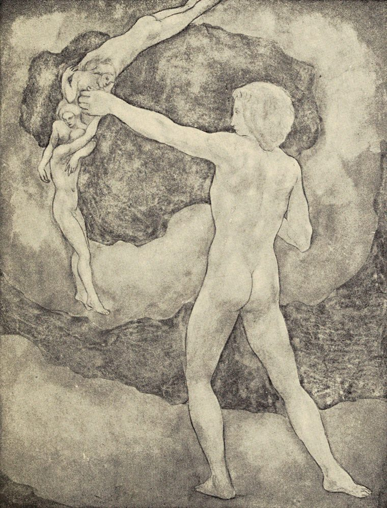

5On Giving
Then said a rich man, Speak to us of Giving.
And he answered:
You give but little when you give of your possessions.
It is when you give of yourself that you truly give.
For what are your possessions but things you keep and guard for fear you may need them tomorrow?
And tomorrow, what shall tomorrow bring to the overprudent dog burying bones in the trackless sand as he follows the pilgrims to the holy city?
And what is fear of need but need itself?
Is not dread of thirst when your well is full, the thirst that is unquenchable?
There are those who give little of the much which they have—and they give it for recognition and their hidden desire makes their gifts unwholesome.
And there are those who have little and give it all.
These are the believers in life and the bounty of life, and their coffer is never empty.
There are those who give with joy, and that joy is their reward.
And there are those who give with pain, and that pain is their baptism.
And there are those who give and know not pain in giving, nor do they seek joy, nor give with mindfulness of virtue;
They give as in yonder valley the myrtle breathes its fragrance into space.
Through the hands of such as these God speaks, and from behind their eyes He smiles upon the earth.

It is well to give when asked, but it is better to give unasked, through understanding;
And to the open-handed the search for one who shall receive is joy greater than giving.
And is there aught you would withhold?
All you have shall some day be given;
Therefore give now, that the season of giving may be yours and not your inheritors’.
You often say, “I would give, but only to the deserving.”
The trees in your orchard say not so, nor the flocks in your pasture.
They give that they may live, for to withhold is to perish.
Surely he who is worthy to receive his days and his nights, is worthy of all else from you.
And he who has deserved to drink from the ocean of life deserves to fill his cup from your little stream.
And what desert greater shall there be, than that which lies in the courage and the confidence, nay the charity, of receiving?
And who are you that men should rend their bosom and unveil their pride, that you may see their worth naked and their pride unabashed?
See first that you yourself deserve to be a giver, and an instrument of giving.
For in truth it is life that gives unto life—while you, who deem yourself a giver, are but a witness.
And you receivers—and you are all receivers—assume no weight of gratitude, lest you lay a yoke upon yourself and upon him who gives.
Rather rise together with the giver on his gifts as on wings;
For to be overmindful of your debt, is to doubt his generosity who has the freehearted earth for mother, and God for father.